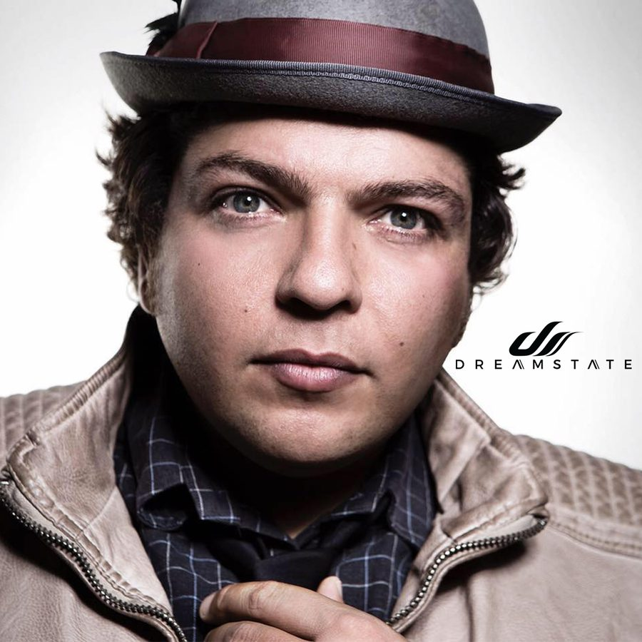

Day.Din Drops His Top 10 Trance Tracks for Dreamstate SoCal 2018


Day.Din, born Deniz Aydin, hails from the north German city of Hamburg, and has been keeping himself rather preoccupied by producing progressive psytrance since the turn of the millennium. Part of the Spin Twist Records crew for over a decade now, and his ongoing and strong presence with them including the evocative “Charlie” that dropped just recently. He’s currently riding high on the swell of interest in trance with a gritty, psychedelic edge.
He’ll be representing his progressive psy sounds at Dreamstate SoCal this weekend, so we got him to throw together a Top 10 chart to represent what you can expect to hear when he’s throwing it down.
Day.Din is playing at Dreamstate SoCal 2018, which takes place Thanksgiving weekend—Friday, November 23, and Saturday, November 24—at NOS Events Center in San Bernardino, CA. Tickets are on sale now. For more information, visit the official website.
Follow Day.Din on Facebook | Twitter | SoundCloud
Follow Dreamstate on Facebook | Twitter | Instagram